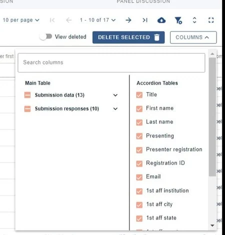
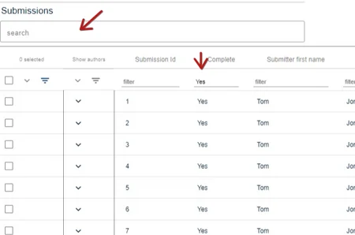
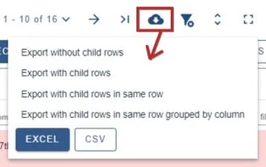
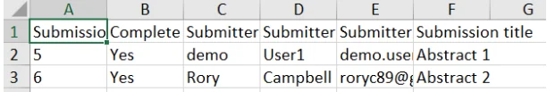
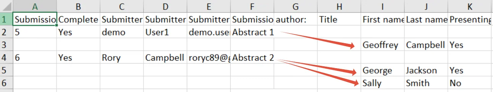
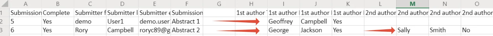
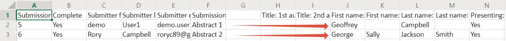

Export table data to Excel
For event organisersNot an organiser?
In all the tables - from submission through to decisions (as well as the tools such as delegate Registration), you can export the exact content and data you need.#
submitter, reviewer, delegate etc), please click here .
NB: When clicking the Download icon, all filtered data (including selected columns) will be exported for the entire table, not just those on view in the screen.
Read the Overview of tables article so you are familiar with the tables in the Oxford Abstracts system.
Although you can click on the Download icon to export the contents of the screen into an Excel spreadsheet for every table, the Submission table has been used for this article. Some tables - like the Submission and Reviews tables - have accordion rows, so it's helpful to use this example, as those without accordion rows are more straightforward.
1) Click Columns in the top right of the table to select the information that you would like visible in the table.
Click the up arrow next to Columns when you have made your selection.

2) Filter as required.

Clicking on the Download icon button will export the data on view in the chosen table.

NB: Tables without accordion rows - eg. Decisions table - will just give you the option to export to Excel or CSV.
You can select from
1) Export without child rows
This will produce a spreadsheet with the parent row data only.

2) Export with child rows
This will produce the following - child rows presented as sub rows.

3) Export with child rows in same row
This will produce a spreadsheet with data in one row, as illustrated below, with rows listing author data grouped together - eg Author 1 title, Author 1 name, Author 1 surname... followed by Author 2 title Author 2 name, Author 2 surname

4) Export with child rows in same row, grouped by column
This will produce a spreadsheet with data in one row, as illustrated below, with rows listing specific data grouped together - eg Author 1 title, Author 2 title, followed by Author 1 name, Author 2 name followed by Author 1 surname, Author 2 surname etc


Did this page solve it?
Thanks — this helps us fix it.
Didn't solve it? Ask our support team
No question is too small, and there's no charge for asking. Raise a ticket and someone who knows the software will pick it up.